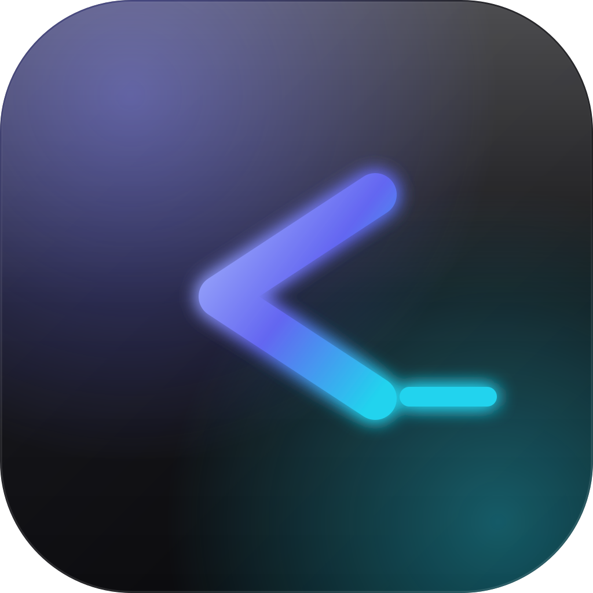
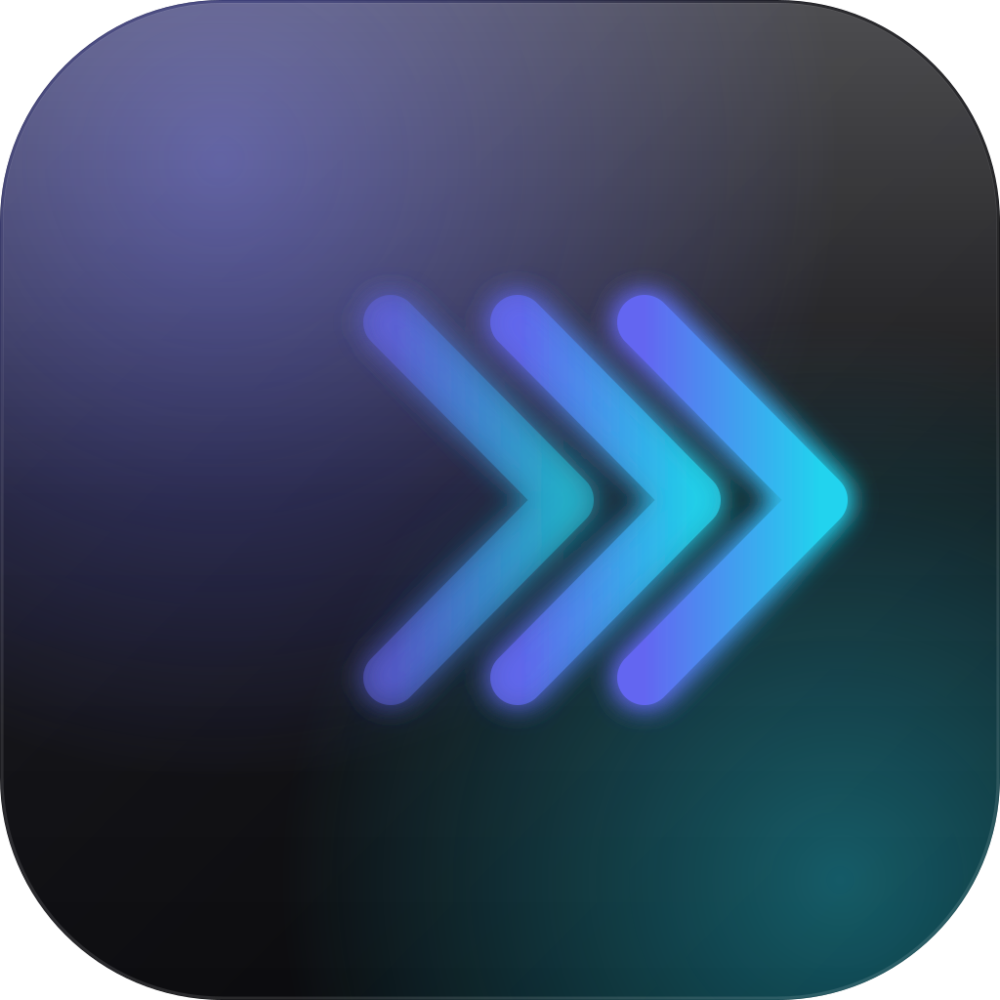
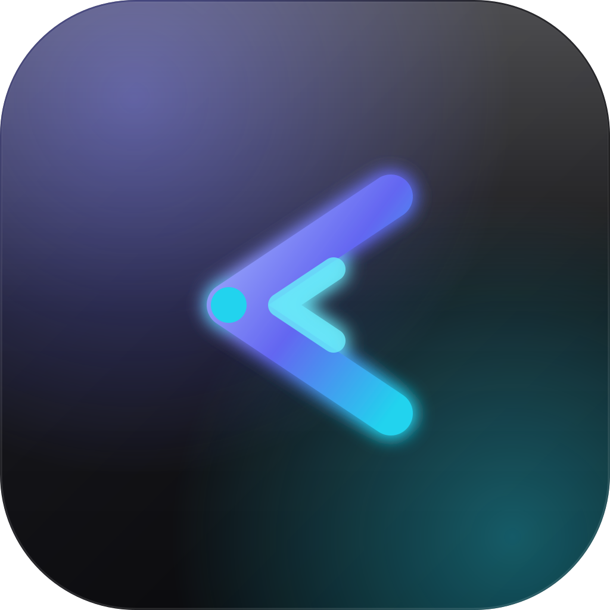

三套候选方案，统一采用 OLED 暗底 + 极光辉光 的 squircle 玻璃质感，与应用 #6366f1 → #22d3ee 品牌色完全对齐。在浏览器中打开本文件即可对比。选定后我会把它装成 Tauri 全套图标。

>_经典终端提示符 >_，渐变描边 + 青色光标条。最稳、最易识别，16px 仍清晰。

>>>三层递进箭头，由靛蓝渐变到青色，传达"流式输出 / 快速执行"的速度感。偏科技、偏动感。

◉外层渐变箭头 + 内嵌青色副箭头 + 顶点光核，形似发光的贝壳开口 / 传送门。最具品牌辨识度。
A / B / C（或描述调整方向，例如"把 A 的光标去掉""C 再亮一点"）。确认后我会运行 npx tauri icon 生成 32/64/128/128@2x、.ico、.icns 及各平台 Square Logo 全套，替换 src-tauri/icons/ 现有占位图。源文件 source-a.svg 留作母版，方便日后改色。